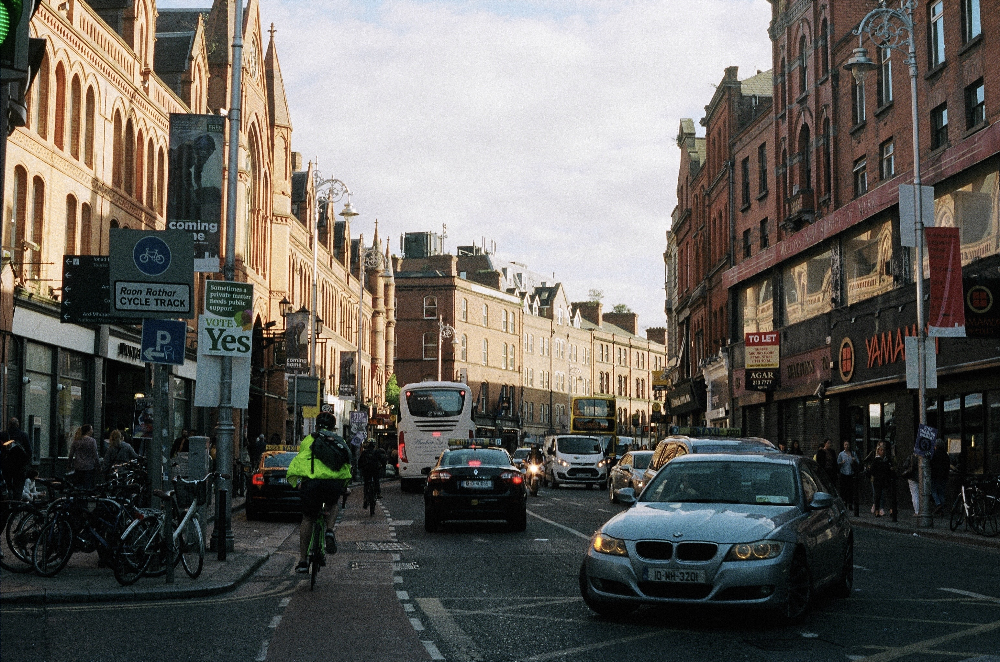
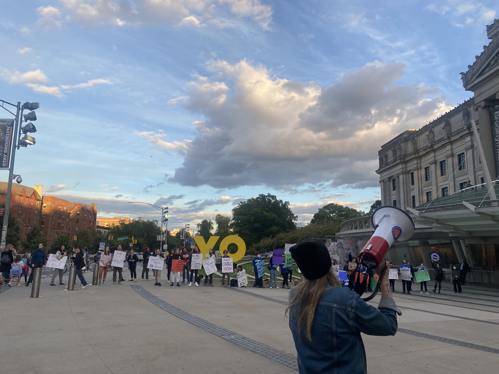
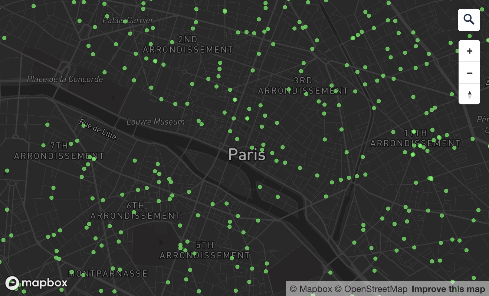

Residential Property Prices in Dublin
Consolidating average prices across neighbourhoods in Co. Dublin from Ireland's largest property website.

Brooklyn Museum Workers Rally for Better Compensation
Day story about union efforts at the Brooklyn Museum.
Graphics Gallery
Selected stand-alone graphics and maps made using a variety of different tools and datasets.

Why are there so many pharmacies in Paris?
A comparison between pharmacies in Paris and New York City.

Australia Recruits Doctors that Ireland Struggles to Retain
Why is everyone going to Australia?
Photography
All images taken on 35mm film.

KIBALE NATIONAL PARK, UGANDA - Researchers stop to admire a chimpanzee in the rainforest.

BAGAMOYO, TANZANIA - Morning sun on the Tanzanian coast.

STONE TOWN, ZANZIBAR - A woman watches tourists walk through the market from the banana stall.

HAVANA, CUBA - Children chat on the street corner.

NAIVASHA, KENYA - View onto Lake Naivasha.

NAROK COUNTY, KENYA - Koila, a man from Maji Moto, a Maasai village, sits on a rock to watch the sunset.

STONE TOWN, ZANZIBAR - Seeking and avoiding shade.

BROOKLYN, NEW YORK - Stefani Bondari, performing at Pete's Candy Store.

MONTREAL, QUEBEC - Portrait of Stefani Bondari, a musician.

MONTREAL, QUEBEC - Tourists admire the view from the top of Mont Royal in February.

CO. MAYO, IRELAND - Sheep on the road.

BAGAMOYO, TANZANIA - Sunset swim in Bagamoyo.

MONTREAL, QUEBEC - A rollerskating group takes to Rue Mont Royal during the street's annual closure to vehicular traffic.

MONTREAL, QUEBEC - Getting ready to ice skate at Parc LaFontaine.

MELAKA, MALAYSIA - Tourists browse at a souvenir stall.

TOKYO, JAPAN - A woman runs to get the train at Shinjuku station.

MONTREAL, QUEBEC - A late night dinner.

JASPER, ALBERTA - Setting up camp before dark.

JERUSALEM - Men walk through Mea She'arim, an ultra-Orthodox neighborhood in the city.